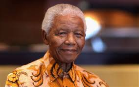

South African social media was ablaze with fresh allegations that the real Nelson Mandela died in 1985 at the age of 67 years. It is claimed that after Mandela supposedly died in 1985, the Apartheid government-installed an imposter by the name of Gibson Makanda to play Mandela. That is the man who negotiated the end of Apartheid and would be the country’s first democratic president.